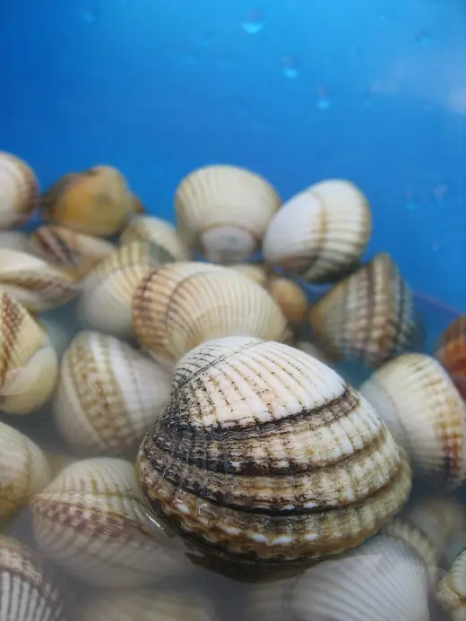

Main course · Popular in Wales
Laverbread, cockles and bacon
Laverbread, cockles and bacon is made with wild cockles, laver, a favourite in Wales.

How do you make laverbread, cockles and bacon?
The Welsh breakfast of cockles, laverbread and bacon.
Wild ingredients
Watch the recipe

Video: BBC Studios on YouTube